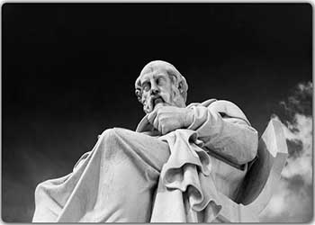
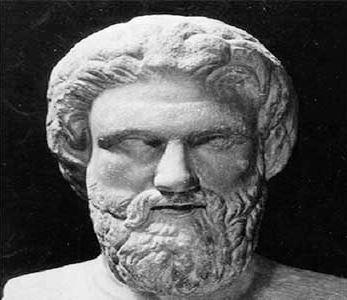

Платон - Диалоги (3-4 века до н.э.)
Коллекция диалогов Сократа с разными жителями Афин, записанная его учеником Платоном. Основные идеи диалогов суть морали и нравоучения Сократа, высмеивающего зачастую ограниченных соотечественников. Темы разговоров касаются добра и зла, места человека в мире, чести, мужества, любви, музыки, красоты и так далее. Метод Сократа - проявить невежество оппонента путём последовательного опровержения его идей, и затем направить собеседника на путь самопознания и развития. Сократ логически доказывает ценность "правильной" жизни, бенефиты благородства и мужества, бонусы честности и справедливости. При этом, учитель Платона настаивает на том, что достичь вышеназванных добродетелей можно только самому, путём последовательного и глубокого разговора с самим собой. Часто во многих диалогах Сократу бывает достаточно лишь постоянно спрашивать "почему?" на ответы собеседника, тем самым помогая последнему понять то или иное явление, или идею. Показательно то, что Сократ настолько надоел учить и играть в совесть Афинян, что в итоге был признан опасным для общества, развратителем молодёжи, а затем - казнён. Один из диалогов описывает Сократа и его учеников, постоянно тусующихся в его камере заключения накануне его казни. Они подговаривают его на побег, и у них всё готово для осуществления. Несмотря на это, Сократ непреклонно следует своей философии "правильной" жизни и решает не бежать и встретить казнь лицом, защитить себя сам на суде и не бежать от глупой, несправедливой толпы. Его примерные слова в этот момент: "Я вёл правильную жизнь, и я отправлюсь прямиком к богам когда она кончится, а те, кто вёл жизнь неправильную и эгоистичную - несчастливы, их потомки - бездарны и ничтожны, а сами они после смерти отправятся к Аиду".
Диалоги Платона читаются приятно, в них содержатся прикольные описания жизни греков того времени. В числе прочего, например, весьма забавно читать про то, как они относились к маленьким мальчикам: они ценились гораздо больше женщин, if you know what i mean :D. Также, строгая логика Сократа в Диалогах показывает силу последовательного логического мышления, и это, пожалуй, главное, чему у него можно научиться. Если во время спора или дискуссии, или просто для убеждения собеседника постоянно задавать вопрос "Почему?", то можно быстренько проявить его некомпетентность, а заодно и лучше понять его (часто ложные) цели и мотивы. Работает безотказно (и бесит всех ужасно). В целом, по моему мнению, Платон был неисправимым идеалистом и в силу этого воспринимал реальность слегка однобоко. Тем не менее, эпично лицезреть мировозрение человека, жившего 2500 лет назад, и видеть, что он был умнее и видел мир яснее и чётче подавляющего большинства современных людей :)
Аристофан - Комедии (4 век до н.э.)
Праотец комедий и автор одного из первых образчиков юмора, дошедших до нас. Высмеивает античный мир, в том числе Платона и Сократа. Легкий стиль повествования обеспечивает интерес, а поэмы у него были небольшие и реально смешные :) Для критичного восприятия зачастую превозносимой Древней Греции - рекомендую к прочтению. Сам я читал "Облака" (высмеивание софистов и прочих умствователей) и "Лягушки" (шуточки над античной драматургией и её работником Еврипидом). Забавным элементом греческой комедии была полная свобода осмеяния какой-то конкретной личности, как чего-то искусственного и наигранного, и поэтому смешного. Например, Аристофан в своих работах нападает не только на поэтов, философов и драматургов, но и на властителей ("Вавилоняне"). К слову сказать, слово personality происходит от слова persona , которое в Древней Греции означало маску, которую надевали актёры в театре (между прочим, русская пара слов "личность" и "личина" несёт тот же смысл). В общем и целом, эпохе того времени было свойственно называть вещи своими именами, а свобода слова была обязательным элементом общества. Аристофан - крутой представитель той эпохи.
Кроме Платона и Аристофана, в Древней Греции было множество умнейших людей, с чьим творчеством я пока не знаком. Точно планирую попробовать Аристотеля и, возможно, Эпикура.
Цитаты древних греков:
Платон, Диалоги - "Алкивиад Первый" (3 Век до н.э.)
Дурному человеку подобает рабствовать; добродететь присуща свободе.
Гесиод, Труды и Дни - 210-230 (7 Век до н.э.)
Слушайся голоса правды, о Перс, и гордости бойся!
Гибельна гордость для малых людей. Да и тем, кто повыше,
С нею прожить нелегко; тяжело она ляжет на плечи,
Только лишь горе случится. Другая дорога надежней:
Праведен будь! Под конец посрамит гордеца непременно
Праведный. Поздно, уже пострадав, узнаёт это глупый.Ибо тотчас за неправым решением Орк поспешает.
Правды же путь неизменен, куда бы ее ни старались
Неправосудьем своим своротить дароядные люди.
С плачем вослед им обходит она города и жилища,
Мраком туманным одевшись, и беды на тех посылает,
Кто ее гонит и суд над людьми сотворяет неправый.Там же, где суд справедливый находят и житель
туземный, И чужестранец, где правды никто никогда не преступит,
Там государство цветет, и в нем процветают народы;
Мир, воспитанью способствуя юношей, царствует в крае.
Пифагор Самосский (5 Век до н.э.)
Избери лучшее, а привычка сделает его приятным и лёгким.